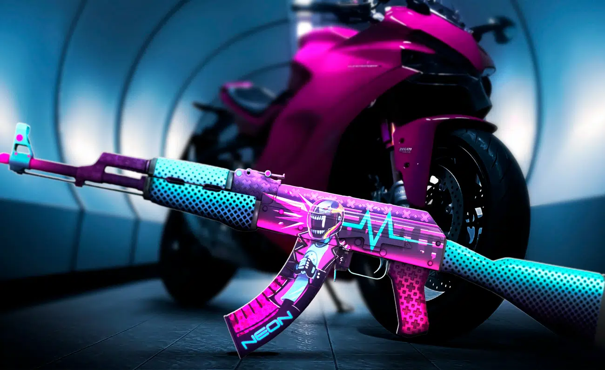
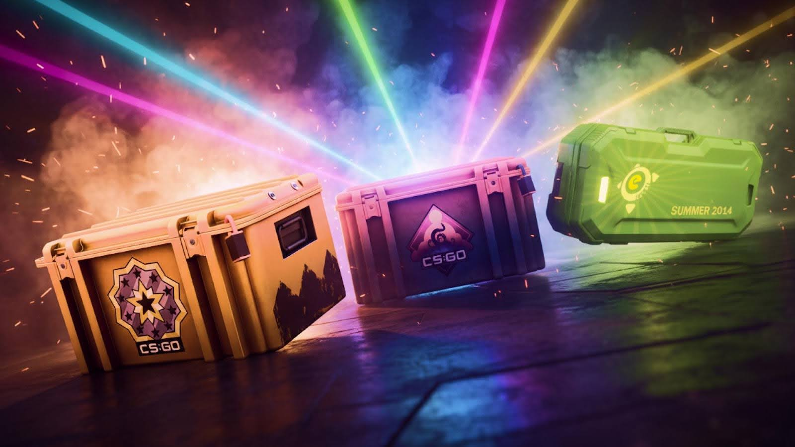

ACTUALIZACIÓN DE MAPAS
Ajustes visuales y nuevas zonas en Mirage y Inferno para mejorar la competitividad.
ÚLTIMA ACTUALIZACIÓN
Mantente al día con los cambios de jugabilidad, mapas, mejoras visuales y contenido competitivo de Counter-Strike 2.

Nueva operación disponible con misiones semanales, recompensas exclusivas y mejoras en matchmaking competitivo.
Ajustes visuales y nuevas zonas en Mirage y Inferno para mejorar la competitividad.
Optimización de servidores subtick y reducción de problemas de interpolación.
Nuevos sistemas automáticos de detección y mejoras en seguridad competitiva.
Cada actualización mejora la experiencia táctica y mantiene el entorno competitivo más equilibrado.
VER MÁS NOTAS